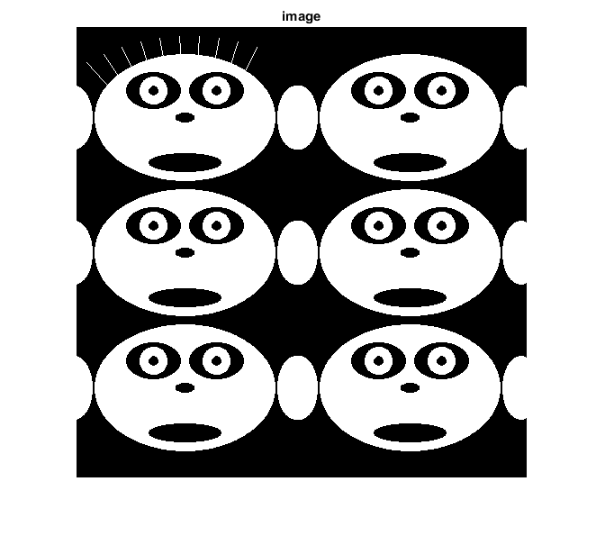
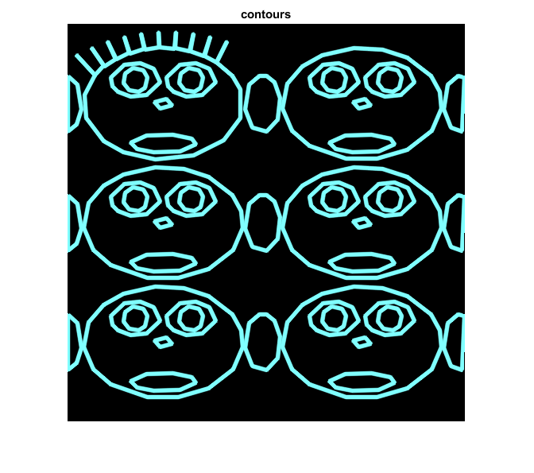

Contours Demo
This program illustrates the use of cv.findContours and cv.drawContours. The original image is put up along with the image of drawn contours.
Sources:
Contents
Draw faces
w = 500; img = zeros(w,w, 'uint8'); % draw 6 faces for i=0:5 dx = mod(i,2)*250 - 30; dy = fix(i/2)*150; white = [255,255,255]; black = [0,0,0]; if i==0 for j=0:9 ang = (j+5)*pi/21; img = cv.line(img, ... round([dx+100+j*10-80*cos(ang), dy+100-90*sin(ang)]), ... round([dx+100+j*10-30*cos(ang), dy+100-30*sin(ang)]), ... 'Color',white, 'Thickness',1); end end opts = {'Thickness','Filled'}; img = cv.ellipse(img, [dx+150, dy+100], [100,70], 'Color',white, opts{:}); img = cv.ellipse(img, [dx+115, dy+70], [30,20], 'Color',black, opts{:}); img = cv.ellipse(img, [dx+185, dy+70], [30,20], 'Color',black, opts{:}); img = cv.ellipse(img, [dx+115, dy+70], [15,15], 'Color',white, opts{:}); img = cv.ellipse(img, [dx+185, dy+70], [15,15], 'Color',white, opts{:}); img = cv.ellipse(img, [dx+115, dy+70], [5,5], 'Color',black, opts{:}); img = cv.ellipse(img, [dx+185, dy+70], [5,5], 'Color',black, opts{:}); img = cv.ellipse(img, [dx+150, dy+100], [10,5], 'Color',black, opts{:}); img = cv.ellipse(img, [dx+150, dy+150], [40,10], 'Color',black, opts{:}); img = cv.ellipse(img, [dx+27, dy+100], [20,35], 'Color',white, opts{:}); img = cv.ellipse(img, [dx+273, dy+100], [20,35], 'Color',white, opts{:}); end % show the face imshow(img), title('image')
Contours
extract the contours
[contours0,hierarchy] = cv.findContours(img, 'Mode','Tree', 'Method','Simple'); contours = cell(size(contours0)); for k=1:numel(contours0) contours{k} = cv.approxPolyDP(contours0{k}, 'Epsilon',3, 'Closed',true); end
show contours at the specified level
levels = 3; % -3:4 if levels <= 0 idx = 3; else idx = -1; end vis = zeros([w,w,3], 'uint8'); vis = cv.drawContours(vis, contours, ... 'ContourIdx',idx, 'Hierarchy',hierarchy, 'MaxLevel',abs(levels), ... 'Color',[128,255,255], 'Thickness',3, 'LineType','AA'); figure, imshow(vis), title('contours')